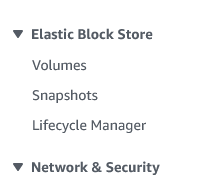

Attaching an EBS instance
-
Create a new EBS volume , by selecting the option from the left menu EBS Volume -> Create EBS Volume (top right) 
-
Provide the details such as size, IOPS and volume type

- Once the volume is created and in ready state, you can attach it to the instance


- Click on attach the volume

- Attach the volume to the instance

- Check the disk status in the instance
[ec2-user@ip-172-31-1-185 ~]$ sudo fdisk -l
Disk /dev/xvda: 8 GiB, 8589934592 bytes, 16777216 sectors
Units: sectors of 1 * 512 = 512 bytes
Sector size (logical/physical): 512 bytes / 512 bytes
I/O size (minimum/optimal): 512 bytes / 512 bytes
Disklabel type: gpt
Disk identifier: 8B1BA8F1-7445-4C33-BE2B-040036A18CCC
Device Start End Sectors Size Type
/dev/xvda1 24576 16777182 16752607 8G Linux filesystem
/dev/xvda127 22528 24575 2048 1M BIOS boot
/dev/xvda128 2048 22527 20480 10M EFI System
Partition table entries are not in disk order.
Disk /dev/xvdb: 10 GiB, 10737418240 bytes, 20971520 sectors
Units: sectors of 1 * 512 = 512 bytes
Sector size (logical/physical): 512 bytes / 512 bytes
I/O size (minimum/optimal): 512 bytes
The above print shows the disk /dev/xvdb is attached. we need to format it and mount it
- Format and mount the disk , validate if you can create file in the ebs volume
[ec2-user@ip-172-31-1-185 ~]$ sudo mkfs.ext4 /dev/xvdb
mke2fs 1.46.5 (30-Dec-2021)
Creating filesystem with 2621440 4k blocks and 655360 inodes
Filesystem UUID: 9392d943-5249-4651-8f16-76174e23f9df
Superblock backups stored on blocks:
32768, 98304, 163840, 229376, 294912, 819200, 884736, 1605632
Allocating group tables: done
Writing inode tables: done
Creating journal (16384 blocks): done
Writing superblocks and filesystem accounting information: done
[ec2-user@ip-172-31-1-185 ~]$ sudo mkdir /mnt/ebs
[ec2-user@ip-172-31-1-185 ~]$
[ec2-user@ip-172-31-1-185 ~]$ sudo mount /dev/xvdb /mnt/ebs
[ec2-user@ip-172-31-1-185 ~]$
[ec2-user@ip-172-31-1-185 ~]$ ls /mnt/ebs
lost+found
[ec2-user@ip-172-31-1-185 ~]$
[ec2-user@ip-172-31-1-185 ~]$ cd /mnt/ebs
[ec2-user@ip-172-31-1-185 ebs]$
[ec2-user@ip-172-31-1-185 ebs]$ touch hello-world-ebs-file
touch: cannot touch 'hello-world-ebs-file': Permission denied
[ec2-user@ip-172-31-1-185 ebs]$ sudo touch hello-world-ebs-file
[ec2-user@ip-172-31-1-185 ebs]$ ls -lrt
total 16
drwx------. 2 root root 16384 Jun 30 01:14 lost+found
-rw-r--r--. 1 root root 0 Jun 30 01:15 hello-world-ebs-file